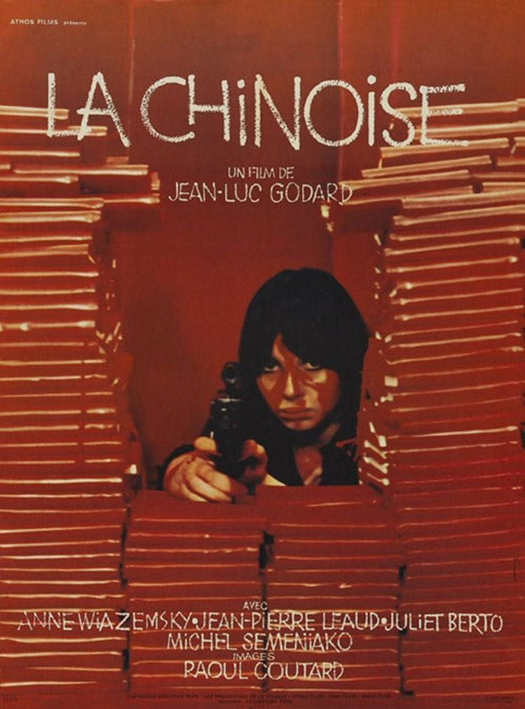
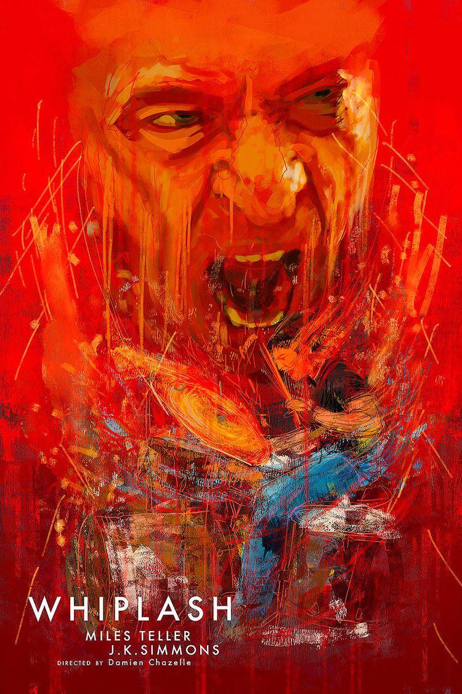
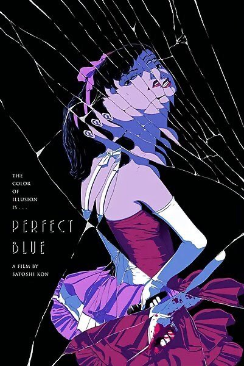
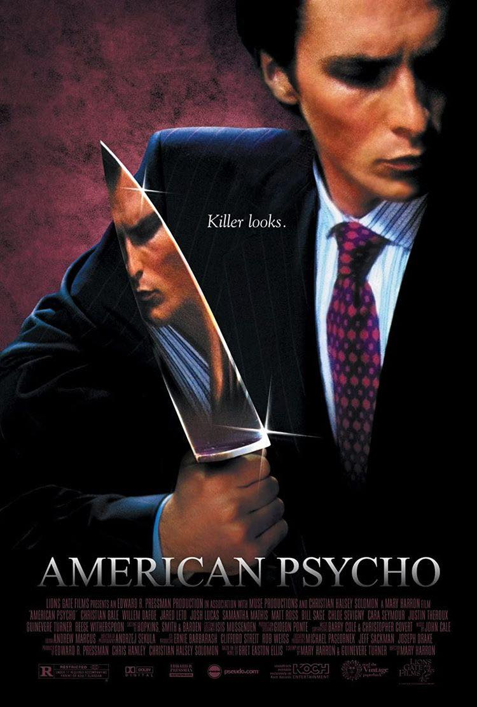
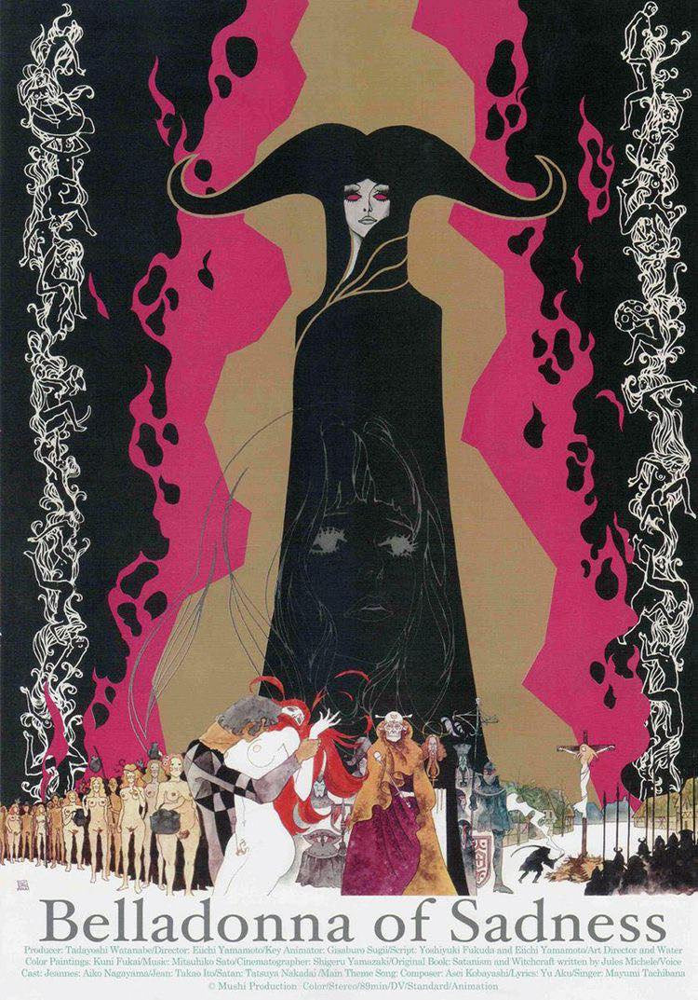

|  Jean-Luc Godard's La Chinoise is a dark French comedy about a group of students. j aded with their suburb lifestyles, a group of middle-class students establish a small Marxist organization with the intention of changing the world by whatever means necessary. After researching the rise of communism in China, the students determine that terrorism and violence must be used to spark their own revolution. |
 A brilliant young drummer enrolls in a renowned music academy with the goal of becoming one of the most well-known drummers of all time. When Fletcher, a severe, cruel, but highly respected teacher, chooses him for the school's jazz band, he is overjoyed. He tries relentlessly to get Fletcher's respect, but when Fletcher fails to realize his potential and aggressively pushes him to the edge, the young man's life and relationships spiral out of control. |
 Perfect Blue explores Mima, a retired pop star-turned-actress, as her sense of reality begins to crumble as she is stalked by an obsessed admirer and haunted by memories of her past. Satoshi Kon's first film, Perfect Blue, is an animated psychological thriller. |
 Patrick Bateman, a privileged New York City archetypal yuppie, hides his parallel psychopathic persona from coworkers and acquaintances as he descends deeper into violent, hedonistic fantasies. |
 On her wedding night, a beautiful peasant woman is assaulted by the local lord. To take her vengeance, she strikes a bargain with the Devil, who appears as an alluring sprite and transforms her into a black-robed vision of madness and desire. |